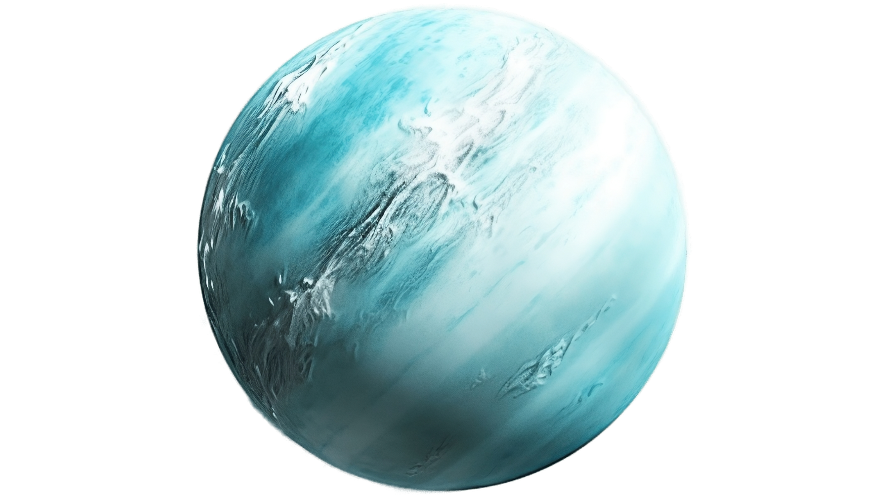
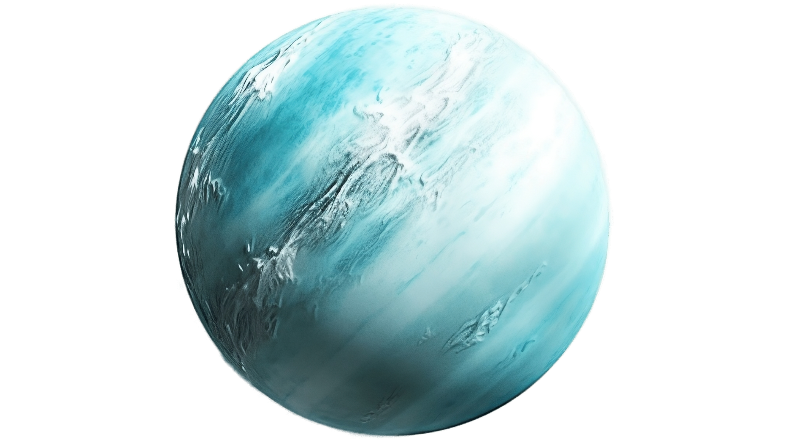
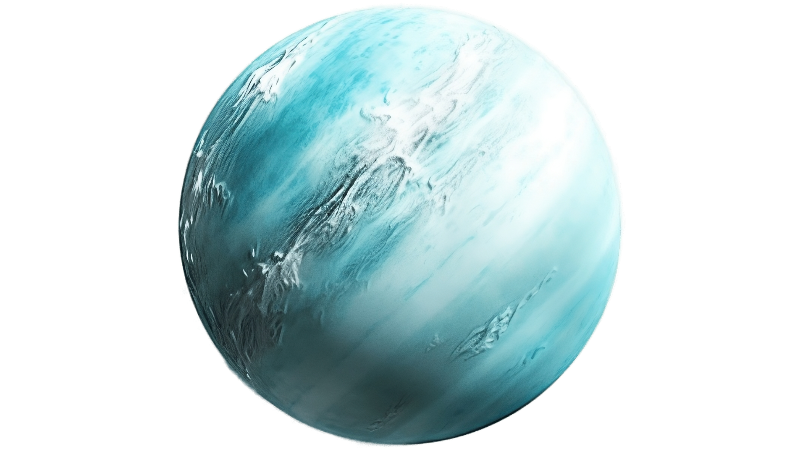
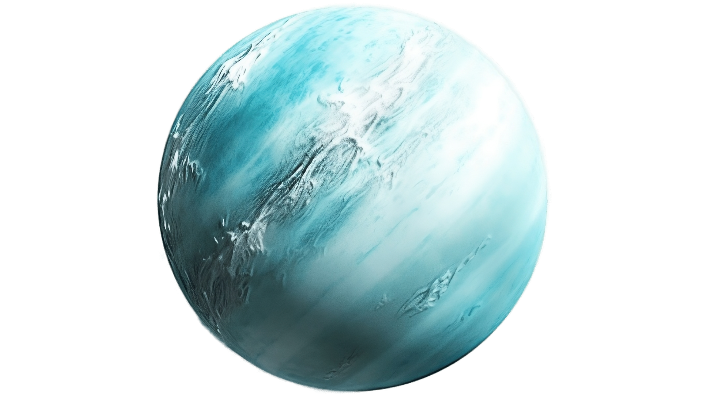

 

Dark, cold and whipped by supersonic winds, giant Neptune is the eighth and most distant major planet orbiting our Sun. More than 30 times as far from the Sun as Earth, Neptune is not visible to the naked eye. In 2011, Neptune completed its first 165-year orbit since its discovery.The planets rich blue color comes from methane in its atmosphere, which absorbs red wavelengths of light but allows blue ones to be reflected back into space. Neptune was the first planet located through mathematical calculations. Using predictions sent him by French astronomer Urbain Le Verrier, based on disturbances in the orbit of Uranus, German asstronomer Johann Galle was first to observe the planet in 1846. The planet is named after the Roman god of the sea, as suggested by Le Verrier. Even though Neptune is the farthest planet from our Sun, it's a frequent stop in pop culture and fiction. The planet served as the backdrop for the 1997 science fiction horror film "Event Horizon," while in the cartoon series "Futurama," the character Robot Santa Claus has his home base on Neptune's north pole. "Dr. Who" fans will remember that an episode entitled "Sleep No More" is set on a space station orbiting Neptune. And in the "Star Trek: Enterprise" pilot episode, "Broken Bow," viewers learn that at warp 4.5 speed, it is possible to fly to Neptune and back to Earth in six minutes. The predominant blue color of the planet is a result of the absorption of red and infrared light by Neptune's methane atmosphere. Clouds elevated above most of the methane absorption appear white, while the very highest clouds tend to be yellow-red as seen in the bright feature at the top of the right-hand image.